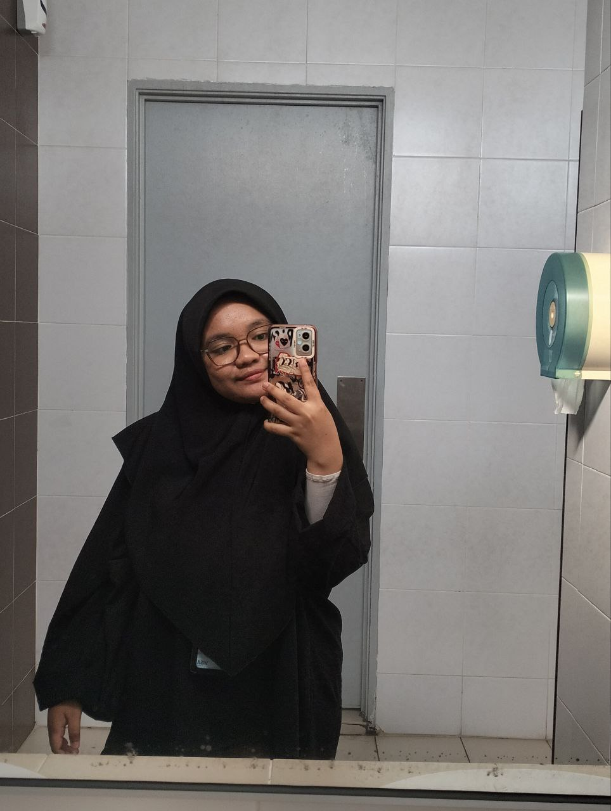
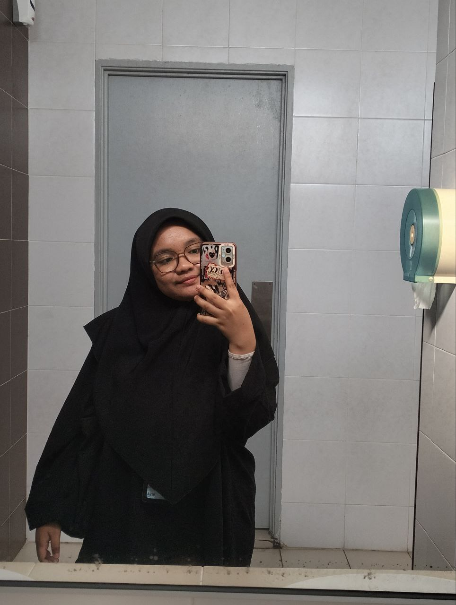
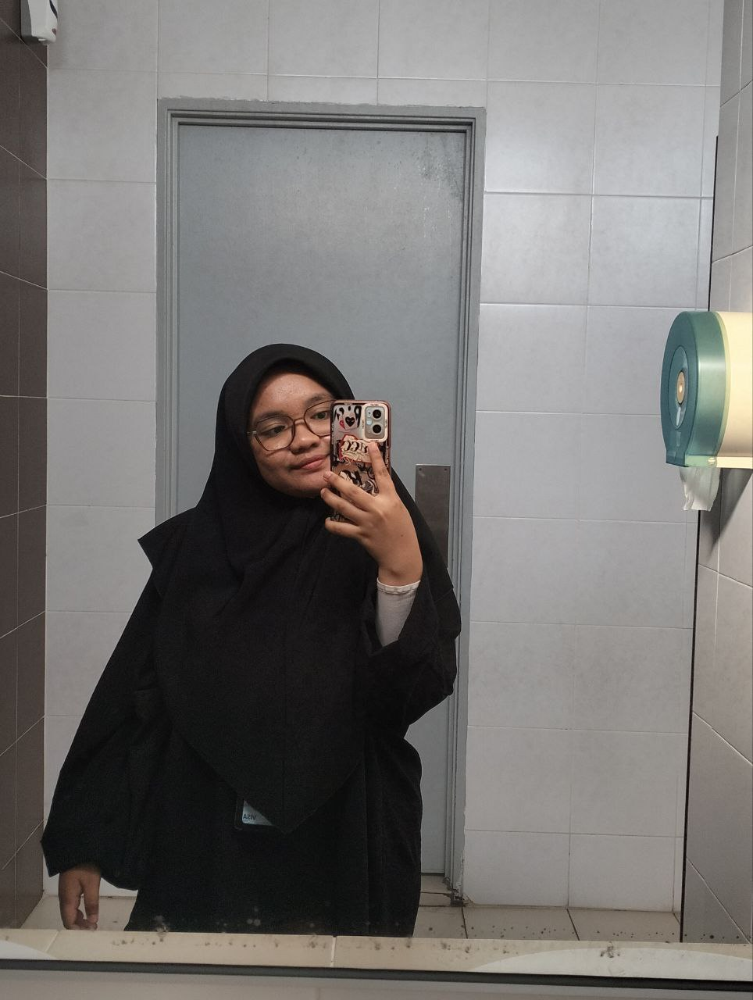
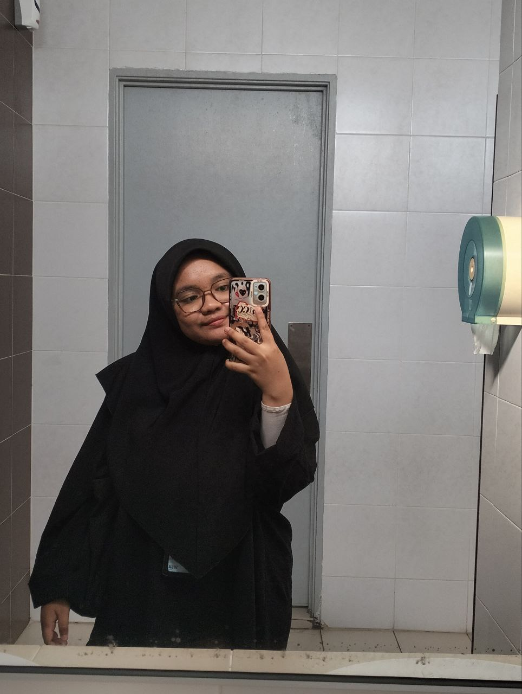

.jpg)
.jpg) 



All About Me (QURATUN NISA')
My name is Quratun Nisa' Binti Jailani, a 20-year-old girl, born on 31st March 2004 at Hospital Besar Kuala Lumpur. I have lived in Hulu Langat, Selangor my entire life with my parents and two other siblings. However, since childhood, my family and I would visit my grandparent's house in Ampang, Selangor, every morning and return home at night. I was fortunate to grow up under the care of my grandparents, who looked after me from kindergarten to primary school while my parents were at work.
More About Me (QURATUN NISA')
Growing up, I dreamed of many professions—a teacher, a lecturer, a doctor, a chef. Other than loving cats, I adore reading both Malay and English books across genres, including fiction, young adult, thriller, and non-fiction. Occasionally, I read books from Indonesia too. I also enjoy listening to music, whether I'm studying, reading, or falling asleep. My preferences span K-pop, T-pop, English, Malay, and even songs in other foreign languages. Although I’m not a movie or drama enthusiast, a few have left a lasting impression on me.
Education
2011 - 2016: SK Taman Kosas & KAFA Integrasi Taman Sri Watan
2017 - 2021: SMK Taman Bukit Indah & MRSM Mersing
2022 - Present: PSM, KPPIM UiTM Rembau
Quotes of the Day
"Do today what should be done. Your tomorrow may never come. Today is the pupil of yesterday. Each day of your life, as soon as you open your eyes in the morning, you can square away for a happy and successful day."
"We cannot solve problems with the kind of thinking we employed when we came up with them."
"It does not matter how slowly you go but do not stop."
- Yours sincerely, QURATUN NISA'(QN)